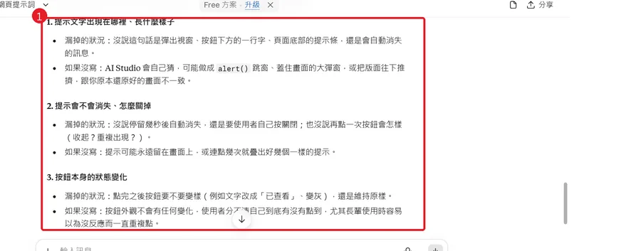
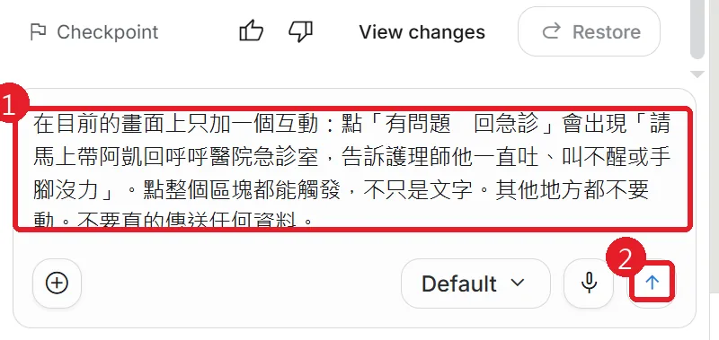
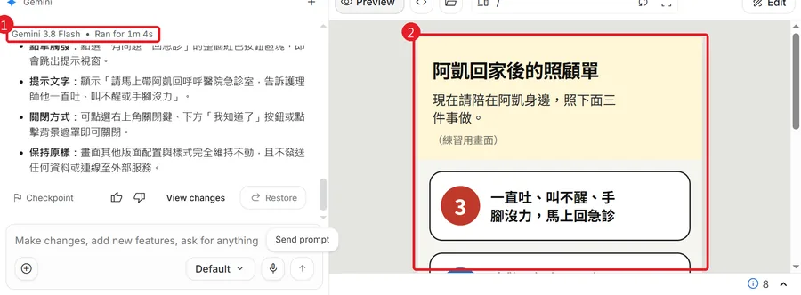
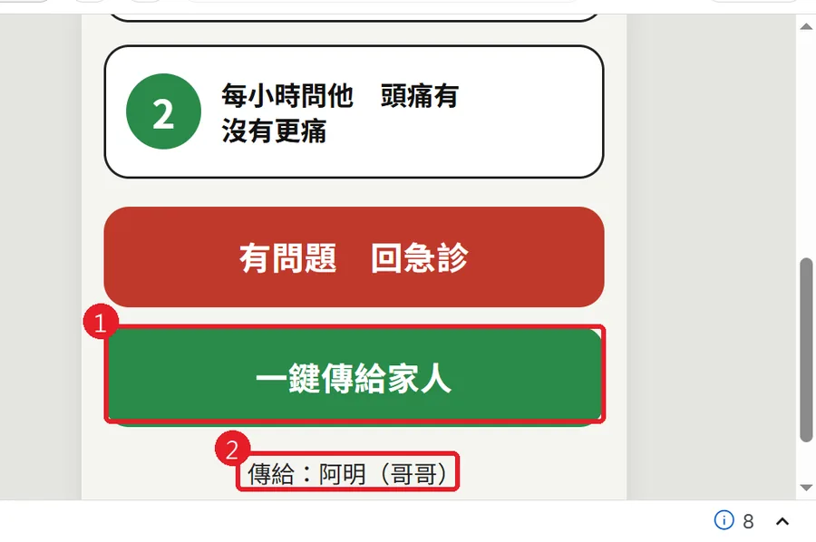
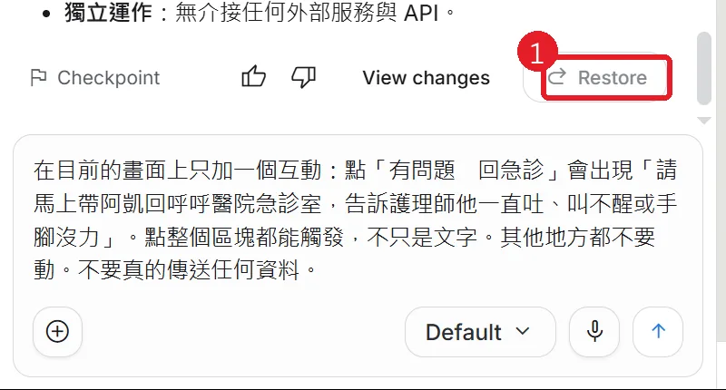
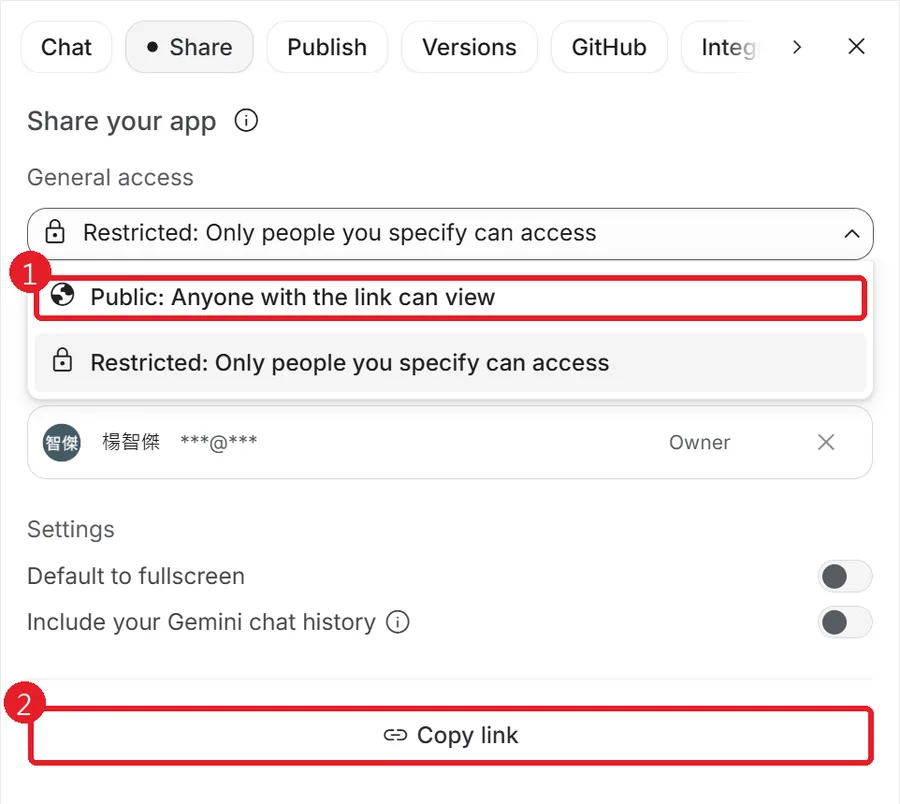

遊戲設計學 · W12 · AI Studio 2/3Desain Game · W12 · AI Studio 2/3
最後更新：Pembaruan terakhir: 2026-11-18 19:19
上一份（W11）你把 Figma 畫面做成了網頁。這一份在那個網頁上只加一個互動（點一個按鈕，出現一段內容），自己點一遍檢查，並請 Claude 幫你找出你漏掉的狀況。Di tugas sebelumnya (W11), Anda telah mengubah tampilan Figma menjadi halaman web. Di tugas ini, hanya tambahkan satu interaksi pada halaman web tersebut (klik satu tombol, muncul suatu konten), klik sendiri sekali untuk memeriksa, dan minta Claude membantu menemukan kondisi yang terlewat oleh Anda.
兩份作業的先後：W11（還原）的期限是 12/02，這一份從 11/25 開放、12/09 截止。先把 W11 做完，這一份就用 W11 做好的專案往下加。Urutan kedua tugas: Batas waktu W11 (pemulihan) adalah 12/02, tugas ini dibuka mulai 11/25 dan ditutup 12/09. Selesaikan W11 terlebih dahulu, tugas ini akan dilanjutkan menggunakan proyek yang sudah selesai dibuat di W11.
| 要交什麼Apa yang harus dikumpulkan | AI Studio 作品連結（已加上互動、設成別人打得開），加上一張 Claude 的截圖（它找出的漏洞和你的決定），再加一張「繳交檢核」截圖Tautan karya AI Studio (sudah ditambahkan interaksi, diatur agar orang lain bisa membukanya), ditambah satu tangkapan layar Claude (celah yang ditemukannya dan keputusan Anda), serta satu tangkapan layar 「繳交檢核 (Pemeriksaan Pengumpulan)」 |
| 大約多久Perkiraan waktu | 40～50 分鐘。加互動約 1～2 分鐘；Claude 回覆約半分鐘40–50 menit. Menambahkan interaksi sekitar 1–2 menit; balasan Claude sekitar setengah menit |
| 開放與截止Pembukaan dan batas waktu | 11/25（三）19:05 開放，12/09（三）19:05 截止。期限一到就不能再交Dibuka pada 25/11 (Rabu) 19:05, ditutup pada 09/12 (Rabu) 19:05. Tidak dapat mengumpulkan lagi setelah batas waktu berakhir |
| 要用的工具Alat yang digunakan | Google AI Studio；Claude 免費版（claude.ai，不用付費）。免費版每 5 小時有用量上限，一次只送一件事，碰到上限就等重設或改天做Google AI Studio; Claude versi gratis (claude.ai, tidak perlu bayar). Versi gratis memiliki batas penggunaan setiap 5 jam, kirim hanya satu hal dalam satu waktu, jika mencapai batas tunggu hingga direset atau kerjakan di hari lain |
| 先講清楚Penjelasan awal | AI Studio 和 Claude 免費版放進去的內容，可能被拿去改進產品。不要放真實姓名、學號，或其他同學的個人資料。Konten yang dimasukkan ke dalam AI Studio dan Claude versi gratis mungkin digunakan untuk meningkatkan produk. Jangan memasukkan nama asli, nomor induk mahasiswa, atau data pribadi teman sekelas lainnya. |
每一步是一張卡片，點標題可以收合或展開。圖中的紅框是要看或要按的地方；圖裡的畫面是老師示範用的練習畫面，你的畫面不一樣沒關係。AI Studio 在手機上送出後可能卡住，建議用電腦。Setiap langkah adalah satu kartu, klik judul untuk menciutkan atau membentangkan. Kotak merah pada gambar adalah tempat yang perlu dilihat atau diklik; tampilan dalam gambar adalah layar latihan yang digunakan untuk demonstrasi guru, tidak apa-apa jika tampilan Anda berbeda. AI Studio mungkin macet setelah dikirim di ponsel, disarankan menggunakan komputer.
到 aistudio.google.com/apps，在左側「My apps」找到你 W11 做的那個專案，打開它。W11 還沒做完的同學，先回去把 W11 做完。Buka aistudio.google.com/apps, temukan proyek yang Anda buat di W11 pada bagian kiri 「My apps」, lalu buka. Mahasiswa yang belum menyelesaikan W11, silakan kembali dan selesaikan W11 terlebih dahulu.
做完的樣子：Tampilan setelah selesai:右邊預覽是你上週做好的網頁。Pratinjau di sebelah kanan adalah halaman web yang Anda buat minggu lalu.
挑你畫面上真的有的一顆按鈕或一個區塊，決定「點哪個、出現什麼」，寫成一句話。按鈕名字要照畫面上的字（用複製貼上最穩）。先不要送給 AI Studio。這一步只要想和寫，手機也可以做。Pilih satu tombol atau satu blok yang benar-benar ada di layar Anda, tentukan "klik yang mana, muncul apa", dan tulis menjadi satu kalimat. Nama tombol harus sesuai dengan teks di layar (paling aman menggunakan salin dan tempel). Jangan kirim ke AI Studio dulu. Langkah ini hanya perlu berpikir dan menulis, dapat dilakukan juga di ponsel.
做完的樣子：Tampilan setelah selesai:你有一句「點哪個、出現什麼」的描述。Anda memiliki satu kalimat deskripsi "klik yang mana, muncul apa".
到 claude.ai，開一個新對話，把下面那段的【 】換成你剛才寫的那句描述，貼上送出（1 則訊息）。手機的 claude.ai 也可以：要點右下的送出鈕，按 Enter 只會換行。Buka claude.ai, mulai percakapan baru, ganti tanda 【 】 pada paragraf di bawah dengan deskripsi yang baru saja Anda tulis, lalu tempel dan kirim (1 pesan). claude.ai di ponsel juga bisa: klik tombol kirim di kanan bawah, menekan Enter hanya akan berganti baris.
做完的樣子：Tampilan setelah selesai:Claude 在約半分鐘內列出最多 5 點，每點寫「漏掉的狀況」和「如果沒寫會怎樣」。把想補的補進你的描述，再把這一輪截成一張圖。Claude akan mencantumkan maksimal 5 poin dalam waktu sekitar setengah menit, setiap poin menuliskan "kondisi yang terlewat" dan "apa yang terjadi jika tidak ditulis". Tambahkan bagian yang ingin dilengkapi ke dalam deskripsi Anda, lalu ambil tangkapan layar dari sesi ini menjadi satu gambar.
接下來是第二階段。這是走讀遊戲的練習畫面，內容是模擬的，請不要改名稱。我打算這樣描述這個畫面的互動：「【按哪個按鈕、畫面出現什麼】」。請幫我找出這段描述漏掉的狀況（例如使用者可能做的其他動作、例外情況、看不到的狀態），最多列 5 點，每一點寫「漏掉的狀況」和「如果沒寫，做出來的畫面會怎樣」。

Claude 給的字不能照抄：它的回覆常常很長，建議的字句也可能是猜的（例如它以為按鈕會撥電話，但你的畫面只是練習用）。把它的建議改成你自己的字、你真的有做的做法。Teks yang diberikan Claude tidak boleh disalin mentah-mentah: balasannya sering kali sangat panjang, dan kata-kata yang disarankannya mungkin hanya tebakan (misalnya mengira tombol akan melakukan panggilan telepon, padahal tampilan Anda hanya untuk latihan). Ubah sarannya menjadi kata-kata Anda sendiri dan cara yang benar-benar Anda lakukan.
免費版碰到「5 小時訊息上限」時，回覆會被截斷，並跳出一個視窗寫著重設時間；等到那個時間再繼續，或改天做。Ketika versi gratis mencapai "batas pesan 5 jam", balasan akan terpotong dan muncul jendela pop-up yang menunjukkan waktu reset; tunggu sampai waktu tersebut untuk melanjutkan, atau kerjakan di hari lain.
回到 AI Studio 專案，把下面那段的【 】換成補好的描述，貼在輸入框，按右下的向上箭頭送出（圖中 2）。每次只加一個，生成約 1～2 分鐘；畫面在轉就是還在做，不要重送。如果互動是跳出視窗，你沒寫怎麼關，AI 會自己決定；想要別種關法就寫進指令。下圖是老師測試時貼的例子，你貼的是自己的那一句。Kembali ke proyek AI Studio, ganti tanda 【 】 pada paragraf di bawah dengan deskripsi yang sudah dilengkapi, tempel di kolom input, lalu tekan panah atas di kanan bawah untuk kirim (2 pada gambar). Hanya tambahkan satu setiap kali, pembuatan memerlukan waktu sekitar 1–2 menit; jika layar masih berputar berarti masih diproses, jangan kirim ulang. Jika interaksinya adalah jendela pop-up dan Anda tidak menulis cara menutupnya, AI akan memutuskan sendiri; jika ingin cara penutupan lain, tuliskan dalam perintah. Gambar di bawah adalah contoh yang ditempel guru saat pengujian, yang Anda tempel adalah kalimat Anda sendiri.
做完的樣子：Tampilan setelah selesai:預覽裡有你要的互動。Terdapat interaksi yang Anda inginkan di dalam pratinjau.
在目前的畫面上只加一個互動：點「【按鈕或區塊的名字】」會出現「【出現的內容】」。點整個區塊都能觸發，不只是文字。其他地方都不要動。不要真的傳送任何資料。


①每一句話都在，沒有掉字、沒有被改寫；②按鈕點下去的結果和你寫的一樣；③沒寫互動的按鈕，點了不動是正常的；④畫面上只有練習用的資料，沒有真人姓名、電話。① Setiap kalimat lengkap, tidak ada kata yang hilang, tidak ada yang ditulis ulang; ② Hasil klik tombol sama dengan yang Anda tulis; ③ Tombol yang tidak dituliskan interaksinya tidak bereaksi saat diklik adalah hal yang normal; ④ Hanya ada data untuk latihan di layar, tidak ada nama atau nomor telepon orang asli.
做完的樣子：Tampilan setelah selesai:四項都過。Keempat poin lolos.


壞掉了：Jika rusak:按每次回覆下面的「Restore（還原）」回到上一版，再重送，這次加一句「其他功能都不要動」。Tekan 「Restore (pulihkan)」 di bawah setiap balasan untuk kembali ke versi sebelumnya, lalu kirim ulang, kali ini tambahkan kalimat "jangan ubah fungsi lainnya sama sekali".
按右上角 Share（分享），「General access」改成「Public: Anyone with the link can view（知道連結的人可以檢視）」（圖中 1），再按「Copy link（複製連結）」（圖中 2）。想確認別人打得開：用無痕視窗貼上連結，會先要你登入 Google，登入後看得到作品就算成功（不登入看不到是正常的）。Tekan Share (bagikan) di pojok kanan atas, ubah 「General access」 menjadi 「Public: Anyone with the link can view (siapa saja yang memiliki tautan dapat melihat)」 (1 pada gambar), lalu tekan 「Copy link (salin tautan)」 (2 pada gambar). Jika ingin memastikan orang lain bisa membukanya: tempel tautan di jendela penyamaran, Anda akan diminta masuk ke akun Google terlebih dahulu, jika karya dapat terlihat setelah masuk berarti berhasil (normal jika tidak terlihat tanpa masuk).
做完的樣子：Tampilan setelah selesai:你有一條打得開的連結，裡面已經有互動。Anda memiliki satu tautan yang dapat dibuka dan sudah berisi interaksi di dalamnya.

怎麼交：到 flipclass 這份作業，貼上 AI Studio 連結，並上傳 Claude 截圖和檢核截圖。連結打不開，視同未繳交。期限一到就不能再交，來不及請先跟老師說。Cara mengumpulkan: Buka tugas ini di flipclass, tempel tautan AI Studio, lalu unggah tangkapan layar Claude dan tangkapan layar pemeriksaan. Jika tautan tidak bisa dibuka, dianggap belum mengumpulkan. Tidak dapat mengumpulkan lagi setelah batas waktu berakhir, jika tidak sempat harap beri tahu guru terlebih dahulu.